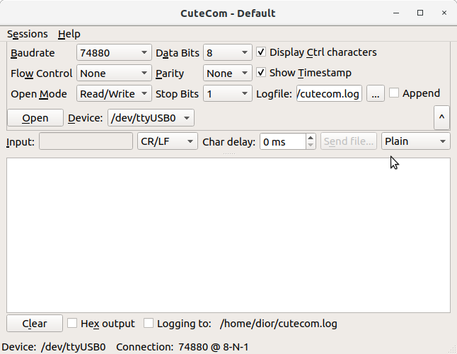
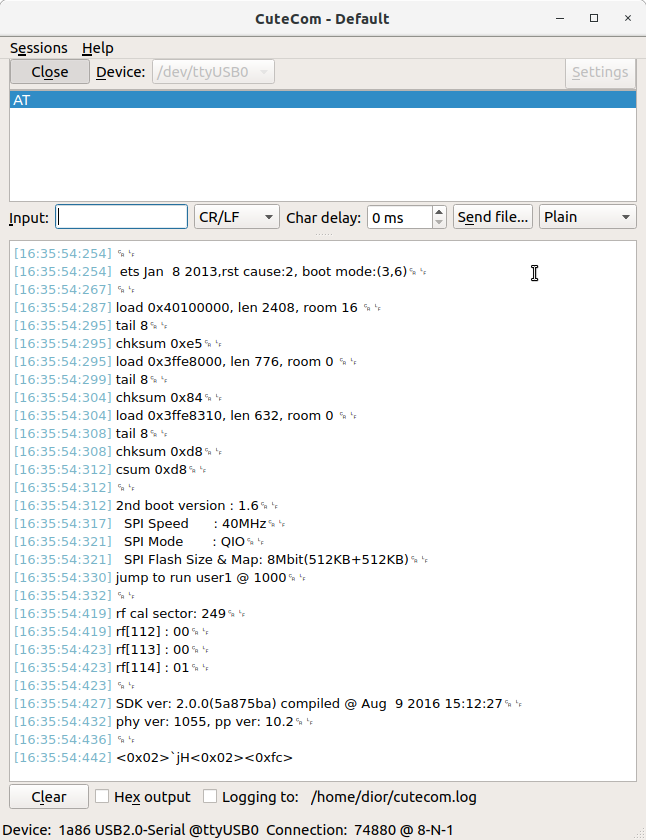

CuteCom монитор порта
В работе с микроконтроллерами, программированием и отладкой, приёмом и передачей данных может понадобиться монитор последовательного порта. Под Linux для этих целей подойдёт программа CuteCom.
Установка:
sudo apt install cutecom
Copy
Для доступа к устройству программу следует запускать от имени суперпользователя или добавить пользователя в группу dialout:
sudo usermod -a -G dialout yourUserName
Copy
Запускаем программу, нажимаем кнопку Settings, делаем настройки и подключаемся к порту:

Заметим, программа позволяет устанавливать скорость передачи из списка и вручную. У меня устройство /dev/ttyUSB0 плата ESS8266-01 подключённая к USB порту через микросхему QinHeng Electronics HL-340 USB-Serial adapter.

Файл конфигурации CuteCom Вы найдёте по адресу ~/.config/CuteCom/CuteCom.conf
[CuteCom]
CharacterDelay=0
LineTerminator=2
LogFileLocation=/home/dior/cutecom.log
Protocol=0
SendingStartDir=/home/dior
WindowGeometry=@Rect(331 299 911 561)
session=Default
[sessions]
1\BaudRate=74880
1\DataBits=8
1\Device=/dev/ttyUSB0
1\FlowControl=0
1\History=AT
1\OpenMode=3
1\Parity=0
1\StopBits=1
1\name=Default
1\showCtrlCharacters=false
1\showTimestamp=false
size=1
Copy
Я отключил вывод времени и спецсимволов:
ets Jan 8 2013,rst cause:2, boot mode:(3,7)
load 0x40100000, len 2408, room 16
tail 8
chksum 0xe5
load 0x3ffe8000, len 776, room 0
tail 8
chksum 0x84
load 0x3ffe8310, len 632, room 0
tail 8
chksum 0xd8
csum 0xd8
2nd boot version : 1.6
SPI Speed : 40MHz
SPI Mode : QIO
SPI Flash Size & Map: 8Mbit(512KB+512KB)
jump to run user1 @ 1000
rf cal sector: 249
rf[112] : 00
rf[113] : 00
rf[114] : 01
SDK ver: 2.0.0(5a875ba) compiled @ Aug 9 2016 15:12:27
phy ver: 1055, pp ver: 10.2
<0x02>hJ<0xd4>)
Copy
<<< ESP8266-01 подключение USB-UART Ω ESP8266-01 AT интерпретатор >>>